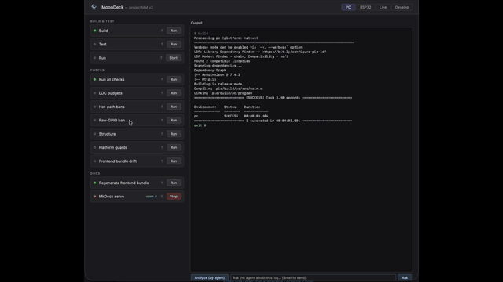

Deploy¶
Build, flash, and test on PC (and ESP32 from Sprint 3). The deploy pipeline target is three scripts: build, flash, test. Anything beyond that requires a structural-additions justification under the guardrails — see process architecture.
The primary interactive surface is MoonDeck (scripts/moondeck.py) — a local browser console that renders every script below as a clickable card grouped into four tabs, with live output streaming, device discovery, in-process and live scenario runners, and an agent loop (Analyze / Fix / Ask). The same scripts can also be invoked directly from the shell, which is what CI and the pre-commit hook do.
MoonDeck — interactive dev console¶
uv run scripts/moondeck.py # prints http://127.0.0.1:8765 — open it in your browser

Four tabs at the top split the surface:
- PC — everything that runs locally: Build / Test / Run, all six guardrail checks, Regenerate frontend bundle, MkDocs serve. No env or port concerns.
- ESP32 — tab-scoped Env selector (
esp32dev/esp32s3_n16r8) and Port dropdown at the top, then four dropdown-driven cards: Build, Flash firmware, Flash filesystem, Serial monitor. Env applies to all four; port applies to flash / flash-fs / monitor. - Live — discovered-Devices list (probe / discover / add) plus the two scenario cards (in-process, live-against-enabled-devices).
- Develop — Release + Sprint dropdowns auto-populated from
docs/development/release-*.md. The Documentation button loads the selected release file at the selected sprint anchor in the right panel. Defaults to the last selected pair vialocalStorage; first launch picks the latest release and its latest sprint. Restartmoondeck.pyto pick up new releases / sprints added to the doc tree.
Within each tab, cards are grouped by purpose. Click Run to execute one; stdout and stderr stream live to the output panel; the card's status dot turns green on exit 0, red otherwise. "Run all checks" runs all six guardrail checks in sequence and stops at the first failure.
Long-running scripts (currently: MkDocs serve) have Start / Stop instead of Run, plus a clickable link to their served URL while running. The UI reflects state across page reloads via /status, so reopening the tab shows what's already running and lets you stop it from any session. Children are killed via process group, so the full uv run mkdocs serve → mkdocs chain shuts down cleanly.
Agent analyze / fix / ask. The bar below the output panel feeds the current log to a claude -p subprocess.
- Analyze (by agent) sends a fixed prompt + log; the agent replies with either
OK(one-line summary) orISSUE: <one-liner>followed by analysis. If the first line isISSUE, a Fix button appears. - Fix asks the agent to edit files locally to address the issue (
Read/Edit/Bashtools), under explicit constraints: no commits, no pushes, no destructive operations. A confirm dialog gates the click. - Ask (free-form input + Enter) sends your question + the current log as context. Answer is free-form — does NOT enforce the OK/ISSUE format. Use it for questions like "what does this
MemLiveline mean?" or "why did fps drop on the last step?".
All three require the claude CLI on PATH; if missing, the panel returns a clear error instead of failing silently. Source: _do_agent() in scripts/moondeck.py.
The UI is the developer's window into the project's processes — what scripts exist, what they do, what they output. It is the only place where script results render side-by-side.
Non-interactive: direct invocation¶
Pre-commit, CI, and ad-hoc command-line use call scripts directly:
uv run scripts/build/build.py
uv run scripts/build/test.py
uv run scripts/checks/check_loc.py
Enable the pre-commit hook¶
git config core.hooksPath .githooks
The hook runs all six check_*.py scripts against the working tree before every commit. Same scripts CI runs. Requires uv on PATH.
Scripts¶
Every card in the UI has a ? link that jumps to the matching section below.
Build¶
Runs PlatformIO against env:pc: pio run -e pc. Produces .pio/build/pc/program; no-op if the binary is up to date. Source: scripts/build/build.py.
The same script accepts an env name as its first positional argument. The ESP32 tab's Build card forwards the tab-scoped env selector (esp32dev or esp32s3_n16r8) so a single card covers both targets — see Build (ESP32). CI runs the same script three times via a matrix; pre-commit only builds PC.
Test¶
Runs the host unit and integration test suite via pio test -e pc-test. Uses doctest (fetched automatically by PlatformIO). Covers ModuleManager factory, HelloModule counter, and HttpServerModule REST handlers via direct dispatch (no sockets). Source: scripts/build/test.py.
Run¶
Starts the compiled pc binary (long-running). Exposes the browser UI and REST API on http://127.0.0.1:8080. Start the Run card after a successful Build; Stop sends SIGTERM. Source: scripts/build/run.py.
The HTTP port differs per platform: PC binds 8080 (port < 1024 requires root and run.py is unprivileged), ESP32 binds 80 so users open http://<device-ip> without a port suffix. The default comes from pal::default_http_port() and is overridable via the HttpServerModule constructor.
WiFi provisioning¶
WifiStaModule reads its credentials from /wifi.json on the device's LittleFS partition. The source for that partition lives in data/ at the repo root.
cp data/wifi.json.example data/wifi.json
$EDITOR data/wifi.json # set ssid + password
uv run scripts/device/flash.py esp32dev --target uploadfs --port /dev/cu.usbserial-XXXX
The same is available in the UI via the ESP32 → Flash filesystem card (set the tab's env selector to esp32dev first).
data/wifi.json is gitignored. On boot, an empty/missing file leaves the module in status="no credentials" and HTTP/WS stay deferred (no netif). With valid credentials, WifiStaModule connects, logs [wifi] connected … to /api/log, and the HTTP + WS modules' loop1s() start their listeners on the next tick.
Build (ESP32)¶
ESP32 tab's first card. Invokes scripts/build/build.py with the tab-scoped env selector value (esp32dev or esp32s3_n16r8), which expands to pio run -e <env>. No port involved — pure build.
Flash firmware¶
Uploads the built firmware over USB via pio run -e <env> --target upload --upload-port <port>. Uses the tab's env selector and port dropdown. The Run button disables until a port is selected. Source: scripts/device/flash.py. CI does not flash (no hardware in the runner).
Flash filesystem¶
Same as Flash firmware but with --target uploadfs: writes data/ to the LittleFS partition. Used for data/wifi.json (see WiFi provisioning).
Serial monitor¶
Long-running. Wraps pio device monitor -e <env> --port <port>, which reads monitor_speed (115200) and monitor_filters (esp32_exception_decoder — decodes panic backtraces inline) from the env section in platformio.ini. Stop sends SIGTERM. The serial port is exclusive, so stop the monitor before flashing the same device. Source: scripts/device/monitor.py.
USB serial port picker¶
Dropdown on the ESP32 tab (above the cards), listing currently-attached devices (/dev/cu.usb* on macOS, /dev/ttyUSB* / /dev/ttyACM* on Linux). Each entry is annotated with the connected board family — ESP32 (CP210x), ESP32 (CH340), ESP32-S2/S3 (USB-CDC), etc. — derived from the USB VID/PID via pyserial's serial.tools.list_ports (a project dep). Unrecognised devices fall back to their pyserial product string (e.g. LG Monitor Controls — useful for telling them apart from the ESP32s in the list). The ↻ button rescans; selection persists across page reloads via localStorage. The Flash and Serial monitor cards consume the current selection — their Run buttons disable when nothing is selected. Source: scan_ports() in scripts/moondeck.py.
Devices (Live tab)¶
Persistent list of projectMM v2 instances reachable over HTTP — the PC binary served by the Run card on 127.0.0.1:8080 and any flashed ESP32 reachable on the LAN. Per-row checkbox enables/disables a device for the live-test runner (the REST runner lands later — see Sprint 8 deferred; the checked set is already persisted so the runner has its input ready).
Three controls in the Devices group:
- Refresh — probes each known device's
GET /api/systemand updates its last-seen status (reachable/unreachable), chip model, MAC, and env. - Discover — sweeps the subnet shown next to the button (default
192.168.1.0/24port80). Hits are filtered by requiring achip_modelfield in the response so router admin pages and other random HTTP servers are rejected. Newly-found devices are merged into the list; existing entries keep theirenabledtoggle. - Add — manual entry as
hostorhost:port. Useful for hosts the scan can't reach (different VLAN, mDNS-only names, etc.).
Per-row × removes a device. The full state is persisted to moondeck.json at the repo root on every change. The file is gitignored (it carries dev-host-specific local-network IPs and MACs).
Click a device name to open its UI in the right panel. The script-output panel swaps to an iframe pointing at http://<host>:<port>/ so the device's controls, preview canvas, and /api/log viewer render inline next to the script list — no need to tab away to a separate browser window. The view-bar above the panel shows which device is loaded plus an "open in new tab" link. Running any script (or clicking the ← Output button) switches the panel back to the live stdout stream.
moondeck.json schema:
{
"version": 1,
"scan_subnet": "192.168.1.0/24",
"scan_port": 80,
"devices": [
{ "name": "PC (local Run card)", "host": "127.0.0.1", "port": 8080, "enabled": true, "discovered": "default" },
{ "name": "MM-70BC", "host": "192.168.1.156", "port": 80, "enabled": true,
"discovered": "scan", "chip": "ESP32-S3 Rev 2", "mac": "24:58:7C:DE:70:BC", "env": "esp32s3_n16r8" }
]
}
CORS note: ESP32 v2's HTTP server doesn't emit Access-Control-Allow-Origin, so the browser can't directly probe a device from the moondeck.py page (different origin). Probes and scans go through the moondeck.py Python server (POST /probe, POST /scan), which has no such restriction.
Reverse engineer sprint¶
Develop tab → Sprint authoring. Sends a claude -p task with instructions to inspect the current git state (git status --short, git diff HEAD, git log --oneline -10), read the existing sprint format in the latest docs/development/release-*.md, and compose a NEW sprint section that retroactively documents the outstanding changes. The first output line must be the ## Sprint N — Title {#sprint-N} heading; the rest follows the existing Scope-blurb + Definition-of-Done + Deferred shape.
Output goes to the script-output panel. The agent does NOT edit any file or commit — the user reviews the generated markdown and pastes it into the release file manually. Use case: a session has produced several modified files but no sprint to frame them; this draft Definition of Done is grounded in the actual diff. Source: DEV_TASKS["reverse-engineer-sprint"] in scripts/moondeck.py.
Commit via agent¶
Develop tab → Sprint authoring. Sends a claude -p task that creates a git commit for the pending changes. The agent reads git status --short / git diff / git log -10 to understand both what's pending and the project's commit-message style, then either:
- commits the existing staged set (if any) — respecting the user's curation, or
- if nothing is staged and the diff looks coherent, stages relevant files individually (never
git add -A/git add .— could pull in secrets) and commits, or - refuses with an explanation if the diff spans unrelated topics, suggesting how to split it.
Commit message follows the project style: lowercase prefix (sprint N:, docs:, feat(ui):), em-dash separator, descriptive title ≤ 72 chars, body bullets, Co-Authored-By: Claude … footer. Hard constraints baked into the prompt: no git push, no git commit --amend, no --no-verify (pre-commit hooks run), and explicit skip-list for files that look like secrets (.env, credentials*.json, wifi.json, moondeck.json). After committing, the agent reports the new commit's hash and subject. Source: DEV_TASKS["commit-via-agent"] in scripts/moondeck.py.
Run scenarios (in-process)¶
Live tab. Replays every JSON under test/test_pc/scenarios/ through ModuleManager in-process via pio test -e pc-test. Rail 2's [MemBoot] / [MemLive] events fire during replay; the output panel shows the same memory trail a real boot does. Source: scripts/build/test.py. Doesn't touch the Devices list — purely maintainer-side fast feedback.
Run scenarios (live, all enabled devices)¶
Live tab. For each device in moondeck.json with enabled: true, probes /api/system, then replays every JSON under test/test_pc/scenarios/ against the device via REST (POST /api/modules for add, POST /api/control for set_control, DELETE /api/modules/<id> for cleanup). After each "measure": true step, samples /api/system for system_fps + heap_free_kb + psram_free_kb and /api/modules for the module count; bounds in the JSON (currently module_count.{min,max}) are asserted. Cleanup deletes every non-head module before and after each scenario so the next run starts clean. Source: scripts/device/scenario.py. Promoted from Sprint 8 deferred — see Sprint 10.
Run all checks¶
Runs all check_* scripts (LOC budgets, hot-path bans, raw-GPIO ban, structure, platform guards) in sequence and stops at the first failure. Same set the pre-commit hook runs.
Patch inventory¶
Scans src/ and scripts/ for // PATCH: (C++) and # PATCH: (Python) comments and lists them with their names. Each patch has a removal condition; the scan is informational — exit 0 always — but makes all outstanding patches visible in one place. Cross-reference: backlog — Known patches. Source: scripts/checks/check_patches.py.
LOC budgets¶
Counts non-blank lines in each surface and compares against the budget:
| Surface | Budget | Notes |
|---|---|---|
src/core/ |
325 | ModuleManager + Scheduler only; excludes nested MoonModule.{h,cpp} |
src/core/MoonModule.h |
250 | the contract: lifecycle + controls + identity (Sprint 3 port) |
src/core/MoonModule.cpp |
380 | non-trivial method implementations (Sprint 3 port) |
src/pal/Pal.h |
100 | timing: millis, micros, yield, sleep |
src/pal/PalFs.h |
150 | LittleFS (ESP32) + std::filesystem (PC) — lands in Sprint 5 with WifiStaModule |
src/pal/PalWifi.h |
100 | WiFi STA primitives (Sprint 5) |
src/pal/PalHttp.h |
350 | HTTP server (cpp-httplib on PC, ESPAsyncWebServer on ESP32) |
src/pal/PalWs.h |
450 | WebSocket (POSIX sockets on PC, AsyncWebSocket on ESP32) |
src/pal/PalSystemInfo.h |
250 | chip_model, reset_reason_str, build info (bumped 200→250 in Sprint 4 when the ESP32 branch landed) |
src/modules/network/ |
275 | Module wrappers only: HttpServerModule + WebSocketModule |
src/modules/system/ |
500 | SystemStatusModule + WifiStaModule + Logger + StateStoreModule — bumped 300→400 in Sprint 5, 400→500 in Sprint 6 |
Pal files for PalGpio, PalRtos, and PalHeap are intentionally not pre-registered — each lands with its first consumer (Sprint 6 for the light driver and FreeRTOS task pin). Pre-registering a budget for a file that has no caller is the v1 kitchen-sink pattern this list exists to prevent.
src/frontend/ (the SPA bundle) is not counted — it is generated data (gzipped JS/CSS as a uint8_t array). Authored UI sources (index.html, style.css, app.js) are .html / .css / .js so check_loc skips them too.
src/pal/ files must each have a BUDGETS entry; check_loc.py fails on any unbudgeted pal file. Adding a new pal concern is therefore an explicit decision: pick a budget, write a one-line comment in BUDGETS saying what the file is for. This is what keeps the pal/ directory partitioned by concern instead of becoming v1's kitchen-sink Pal.h.
Surfaces are nested-aware: counting src/core/ excludes anything that falls under another budgeted sub-path. Fails if any surface exceeds its budget. Bumping a budget requires editing scripts/checks/check_loc.py with a signed-off line in the release plan.
Hot-path bans¶
Scans src/ for void <Class>::loop[20ms|1s|10s]?() { ... } method bodies and fails if any contains a banned pattern:
- Allocations —
new/malloc/psram_malloc/JsonDocument - Blocking calls —
delay/vTaskDelay/sleep/usleep/recv
Implements the hot-path rules from process architecture: no allocations and no blocking calls inside any loop*() body. Allocate in setup() or on a control-update event instead. Source: scripts/checks/check_hot_path.py.
Raw-GPIO ban¶
Fails on any GPIO call with a literal integer pin: pinMode(5, ...), digitalWrite(13, ...), gpio_set_level(2, ...), analogRead(34), and similar. Pins must come from a typed board configuration (e.g. BoardPins::WS2812_DATA) — the rule is about traceability of the pin number, not whether it is statically known. Source: scripts/checks/check_gpio.py.
Structure¶
Lists tracked top-level paths (git ls-files) and fails on anything not in the allowlist hard-coded in scripts/checks/check_structure.py. Adding a new top-level path requires editing the allowlist with a paired ADR under docs/developer-guide/adr/.
Platform guards¶
Scans every .h / .hpp / .cpp / .cc file under src/ except files in src/pal/, and fails on any platform-identity gate: #ifdef ARDUINO, #ifdef ESP_PLATFORM, #ifdef ESP32, #ifdef ARDUINO_ARCH_*, #include <Arduino.h>, #include <esp_*.h>, #include <freertos/...>. Platform-conditional code lives only in src/pal/ files; modules consume it through the pal::* interface. See system architecture — Pal. Source: scripts/checks/check_platform_guards.py.
Frontend bundle drift¶
Re-generates src/frontend/frontend_bundle.h in-memory from the sources (index.html + style.css + app.js) and fails if the committed bundle differs byte-for-byte. The generator (scripts/build/gen_frontend_bundle.py) is deterministic — gzip is invoked with mtime=0 so identical sources always produce identical bundles. Fix drift by running uv run scripts/build/gen_frontend_bundle.py and committing the regenerated bundle. Source: scripts/checks/check_bundle.py.
Code analysis (lizard)¶
Runs lizard over src/ (C++ files only, src/frontend/ excluded) and prints a per-file summary of NLOC, average cyclomatic complexity (AvgCCN), token count, and function count. Any function with CC > 15 or length > 1000 lines appears in a Warnings block at the bottom.
NLOC AvgNLOC AvgCCN Avg.token Fns File
351 10.1 4.1 113.2 34 src/core/MoonModule.cpp
253 10.3 2.5 98.0 19 src/pal/PalHttp.h
...
!!!! Warnings (cyclomatic_complexity > 15 …) !!!!
113 32 1231 0 153 pmm::HttpServerModule::setup@33-185@…
Lizard is fetched on demand via uv run --with lizard — no permanent project dependency. Source: scripts/checks/check_analysis.py.
C++ static analysis (cppcheck)¶
Runs cppcheck over src/ with warning, style, performance, and portability checks enabled. Suppressed categories:
missingInclude*— PlatformIO lib_deps are not on the include path outside a PlatformIO build.returnDanglingLifetimeinModuleManager.cpp— false positive: raw pointer is captured before theunique_ptrmoves into the vector; pointer remains valid.knownConditionTrueFalse— PC stubs return constant 0; on ESP32 these are live runtime values.useStlAlgorithm,uselessOverride,cstyleCast,constVariable*,functionStatic— intentional style choices in pal files; no-op PC stubs can't be static because they implement a virtual interface on ESP32.
Anything that survives the suppressions is worth investigating. First run found a real bug: SystemStatusModule::tickCount_ shadowing MoonModule::tickCount_, causing msPerTick to never advance for that module — fixed by renaming to fpsTick_.
Cppcheck is fetched on demand via uv run --with cppcheck — no permanent project dependency. Source: scripts/checks/check_cppcheck.py.
Python lint (ruff)¶
Runs ruff over scripts/ and reports any findings. E402 (module-level import not at top of file) and E701/E702 (intentional compact one-liners in moondeck.py) are suppressed — everything else is live. On a clean codebase prints All checks passed!.
Ruff is fetched on demand via uv run --with ruff — no permanent project dependency. Source: scripts/checks/check_ruff.py.
Regenerate frontend bundle¶
Inlines style.css and app.js into index.html, gzip-compresses the result, and writes src/frontend/frontend_bundle.h as a uint8_t array. HttpServerModule serves this on GET / with Content-Encoding: gzip. Source: scripts/build/gen_frontend_bundle.py.
MkDocs serve¶
Starts the local documentation server at http://127.0.0.1:8000/projectMM-v2/ via uv run --extra docs mkdocs serve --dev-addr 127.0.0.1:8000. Long-running: the card shows Start / Stop, plus a clickable "open ↗" link while running. Source: scripts/build/mkdocs_serve.py.